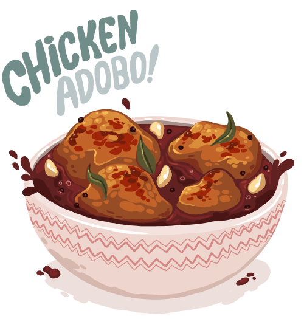

Adobong Manok

Description
Chicken Adobo or Adobong Manok is a popular Filipino dish
but it originated from the Spanish word adobar or marinate.
By virtue of its etymology, it is a dish that involves
marinating the chicken meat in soy sauce and some spices.
Ingredients
- 1 kg chicken, cut into serving parts
- 1/2 cup soy sauce
- 1/2 cup vinegar
- 1 cup water
- 3-4 pcs dried laurel leaves
- 1 tsp whole peppercorn
- 1 tsp sugar
- 3 tbsp cooking oil
Steps
- In a large mixing bowl, combine the chicken with
the soy sauce and garlic then mix well.
- Marinate the chicken for about 1 hour, better if you could go for 3 hours.
- Heat the cooking oil in a pot.
- Remove the chicken from the marinade (reserve marinade) and pan-fry it when the oil gets hot enough.
- Cook each side of the chicken for about 2 minutes.
- Pour in the marinade including the garlic.
- Add-in the water and bring to a boil.
- Add-in the bay leaves and peppercorn.
- Simmer for 30 minutes or until the chicken gets tender.
- Add-in the vinegar but do not stir. Cook for 10 minutes.
- Add-in the sugar and some salt to taste. Stir then remove from heat.
- Transfer to a serving plate, enjoy!